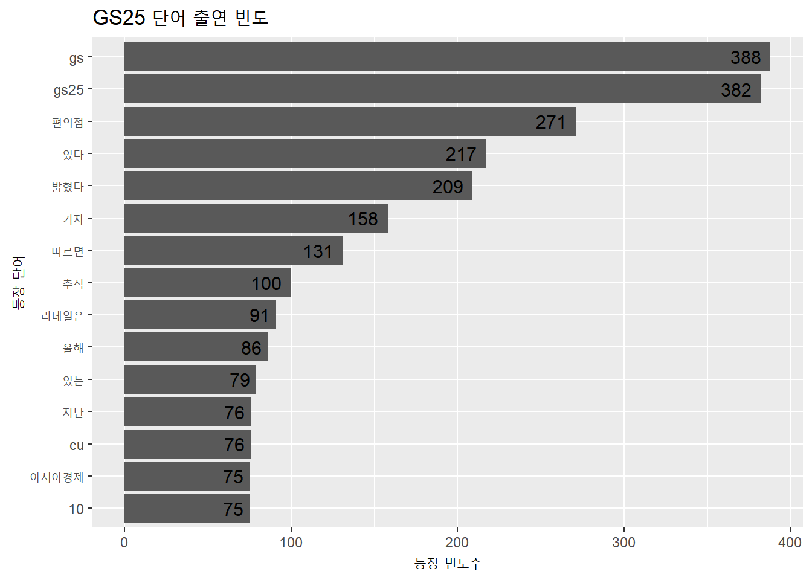
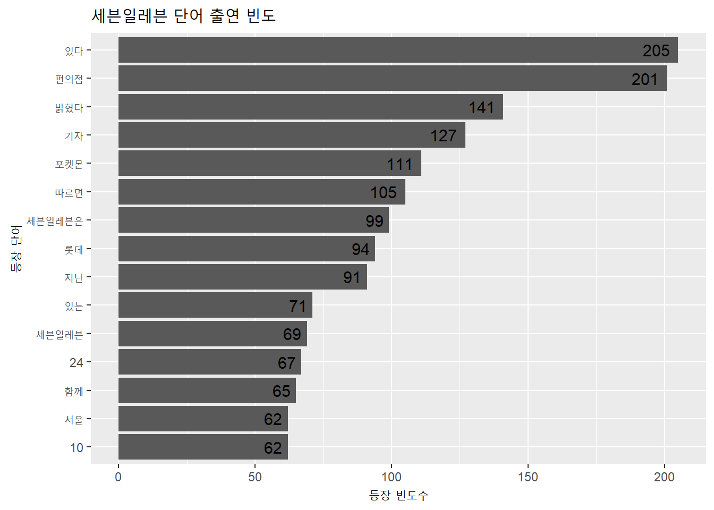
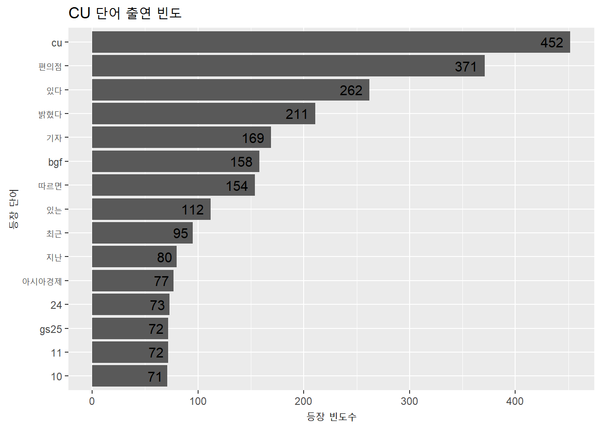

#install.packages("readxl")
GS25_test_data1 <- readxl::read_excel('GS25_test_data.xlsx')
GS25_test_data2 <- GS25_test_data1[,17]
colnames(GS25_test_data2) <- c("body")2nd_data
1. 자료수집
- 기간 : 2022. 08. 01 ~ 2022. 09. 17.
- 데이터 수집 출처 : 빅카인즈
- 통합뉴스 크롤링 (정치, 사회, 스포츠 뉴스 제외)
1) GS25
2) 세븐일레븐
#install.packages("readxl")
seven_test_data1 <- readxl::read_excel('seveneleven_test_data.xlsx')
seven_test_data2 <- seven_test_data1[,17]
colnames(seven_test_data2) <- c("body")3) CU
#install.packages("readxl")
CU_test_data1 <- readxl::read_excel('CU_test_data.xlsx')
CU_test_data2 <- CU_test_data1[,17]
colnames(CU_test_data2) <- c("body")2. 형태소 분석
1) 기본 세팅
library(multilinguer)
#install.packages(c("stringr", "hash", "tau", "Sejong", "RSQLite", "devtools"), type = "binary")
#install.packages("remotes")
#remotes::install_github("haven-jeon/KoNLP", upgrade = "never", INSTALL_opts = c("--no-multiarch"))
library(KoNLP)Checking user defined dictionary!#useNIADic()
#install.packages("dplyr")
library(dplyr)
Attaching package: 'dplyr'The following objects are masked from 'package:stats':
filter, lagThe following objects are masked from 'package:base':
intersect, setdiff, setequal, union#install.packages("tidytext")
library(tidytext)
library(stringr)
#install.packages("textclean")
library(textclean)2) GS25
GS25_test_data3 <- GS25_test_data2 %>%
as_tibble()
GS25_test_data4 <- GS25_test_data3 %>%
unnest_tokens(input = body,
output = GS25_word)3) 세븐일레븐
seven_test_data3 <- seven_test_data2 %>%
as_tibble()
seven_test_data4 <- seven_test_data3 %>%
unnest_tokens(input = body,
output = seven_word)4) CU
CU_test_data3 <- CU_test_data2 %>%
as_tibble()
CU_test_data4 <- CU_test_data3 %>%
unnest_tokens(input = body,
output = CU_word)3. 단어 빈도 구하기
1) GS25
GS25_test_data5 <- GS25_test_data4 %>%
count(GS25_word, sort = T) %>%
filter(str_count(GS25_word) > 1)
GS25_word_top15 <- GS25_test_data5 %>%
head(15)
library(ggplot2)
ggplot(GS25_word_top15, aes(x = reorder(GS25_word,n), y=n)) +
geom_col() +
coord_flip() +
geom_text(aes(label=n), size=4, hjust=1.3) +
labs(title = 'GS25 단어 출연 빈도', x = '등장 단어', y = '등장 빈도수')
2) 세븐일레븐
seven_test_data5 <- seven_test_data4 %>%
count(seven_word, sort = T) %>%
filter(str_count(seven_word) > 1)
seven_word_top15 <- seven_test_data5 %>%
head(15)
library(ggplot2)
ggplot(seven_word_top15, aes(x = reorder(seven_word,n), y=n)) +
geom_col() +
coord_flip() +
geom_text(aes(label=n), size=4, hjust=1.3) +
labs(title = '세븐일레븐 단어 출연 빈도', x = '등장 단어', y = '등장 빈도수')
3) CU
CU_test_data5 <- CU_test_data4 %>%
count(CU_word, sort = T) %>%
filter(str_count(CU_word) > 1)
CU_word_top15 <- CU_test_data5 %>%
head(15)
library(ggplot2)
ggplot(CU_word_top15, aes(x = reorder(CU_word,n), y=n)) +
geom_col() +
coord_flip() +
geom_text(aes(label=n), size=4, hjust=1.3) +
labs(title = 'CU 단어 출연 빈도', x = '등장 단어', y = '등장 빈도수')